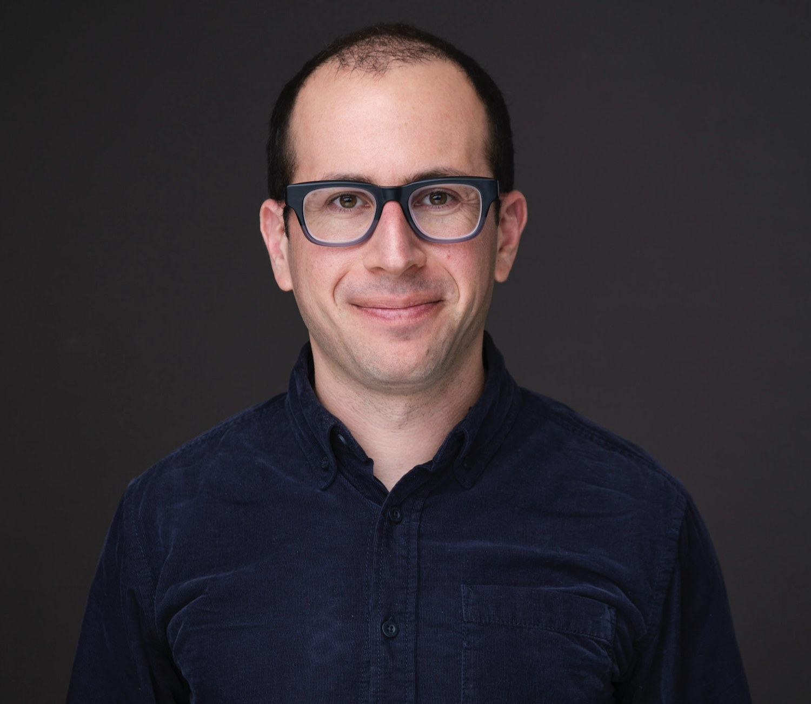

Curtis Bram
Research on survey methods, political behavior, elites, and democratic attitudes.
I am an assistant professor at The University of Texas at Dallas. I teach survey methods in the School of Economic, Political and Policy Sciences.
My first book, Elitism vs. Populism, is forthcoming with Cambridge University Press in the Elements in Experimental Political Science series.
I received a Ph.D. in Political Science from Duke University in 2023. At Duke I was a member of the Worldview Lab. I previously earned an M.A. (Honors) in International Relations from the University of Chicago and a B.A. in economics and political science from Tulane University.

Research and teaching
Current appointment
Assistant Professor, The University of Texas at Dallas
Book
Elitism vs. Populism, Cambridge University Press (2025)
Core areas
Survey methods, elections, political participation, media, democratic attitudes
Research agenda
My work focuses on how people and elites think about politics, how institutions shape democratic behavior, and how information environments affect participation and polarization. Across experiments, surveys, and observational data, the goal is to understand what citizens, candidates, and officials actually do when political stakes feel high.
Recent highlights
- Elitism vs. Populism asks whether elites are actually more committed to democracy than the public.
- Public Opinion Quarterly (2023) examines how expectations for policy change shape participation.
- Political Psychology (2023) studies focalism, turnout, and polarization.